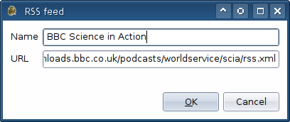
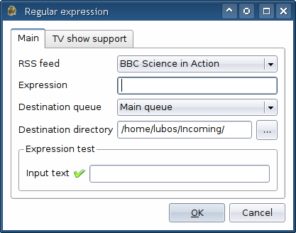
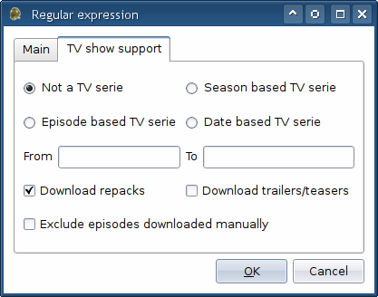

|
RSS Integration |
You can manage the RSS integration in Settings - RSS. Adding of RSS feeds is pretty straightforward. All you have to do is enter the feed's URL, give it a name and click OK.

The second step is to create a regular expression(s) (regexp) matching items from the feed you want to be downloaded. If you want to download everything that appears in the feed, leave the regexp field empty - since only partial match is required, this will match everything. You may want to create a new queue for automatized downloads and such queue may then be selected in this dialog as well.

The TV show support exists so that duplicate files aren't downloaded. Season based TV shows have episodes marked like S01E12 or 1x12. Episode based TV shows have no seasons, hence FatRat will regard the last found integer in episode's name as the episode number. Date based TV shows (like The Daily Show, for instance) have date in its name - examples: 2008-04-28, 4/28/08, etc.

The download repacks and download teasers/trailers checkboxes do exactly what they say. If you check the former, FatRat will download the same episode again if a repack pops up. As for BitTorrent downloads, manually added transfers may be checked and if a TV show's episode is detected, such episode will not be downloaded again when it appears in RSS.
Copyright © 2006-2008 Luboš Doležel